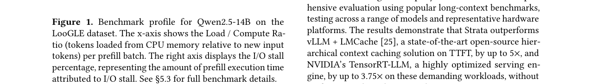
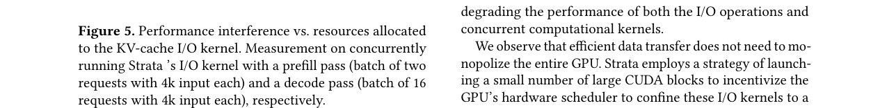
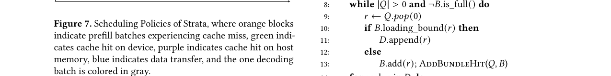
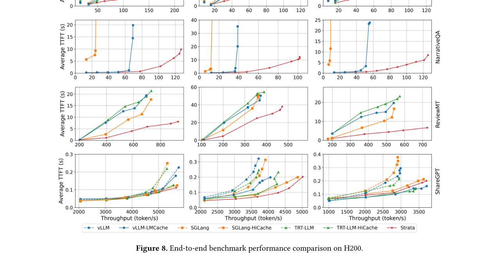

Strata: Hierarchical Context Caching for Long Context Language Model Serving
总结
长上下文大语言模型（LLM）需要处理数十万乃至上百万 token 的输入，KV cache 的分层缓存（GPU HBM → CPU 内存 → SSD）成为生产系统的标配，但将大量缓存上下文从慢速层级传回 GPU 时存在严重的 I/O 瓶颈与调度低效问题。
As-is: 现有系统（如 vLLM、SGLang、TensorRT-LLM）采用 PagedAttention 机制，以小页面（1–32 token）管理 KV cache 以提高 GPU 内存利用率和缓存命中率。然而，小页面导致数据碎片化，跨内存层级传输时只能产生几 KB 的小数据块，无法饱和 PCIe 带宽——在 PCIe 5.0 上仅达到理论带宽的约 22%，在 GH200 平台上甚至低至 5%。同时，现有调度器假设 prefill 计算足以掩盖 KV cache 加载延迟，但在长上下文场景下该假设失效：缓存加载时间可超过计算时间，系统从计算受限变为 I/O 受限。此外，异步调度器在缓存未命中解析窗口内容易产生 "delay hit"（多个请求对同一上下文的重复 prefill），进一步恶化吞吐。在 LooGLE 数据集上，74% 的 prefill 时间被 KV 传输阻塞，吞吐下降高达 4 倍。
To-be: Strata 提出了一种分层上下文缓存框架，包含两大核心创新：（1）GPU 辅助 I/O 机制，通过启动 CUDA kernel 实现大规模并行数据传输，解耦 GPU 的 layer-first 布局与 CPU/存储的 page-first 布局，在小页面下仍能高效利用带宽；（2）缓存感知调度器，通过 delay hit 延迟、均衡批次构建和 bubble filling 三阶段策略，将 I/O 延迟与计算有效重叠。基于 SGLang 实现并已在生产环境部署，Strata 在长上下文基准上相比 vLLM-LMCache 实现最高 5 倍吞吐提升，相比 NVIDIA TensorRT-LLM 实现 3.75 倍加速，且在短上下文场景下无性能退化。
背景
LLM 的上下文窗口持续扩展，Google Gemini 和 Qwen 系列已支持百万 token，DeepSeek-V3、Llama-3.1/4、Claude 3.5 等也提供 128K–200K token 的上下文长度。这催生了编码助手、RAG、文档分析和对话 AI agent 等需要理解大量文本的应用。
LLM 推理分为 prefill 和 decode 两个阶段。Prefill 阶段处理用户查询的新 token 和上下文 token（来自文档或历史交互），产生的 KV cache 可避免重复计算。然而，KV cache 的存储开销巨大——以 Llama-8B 为例，40 GB 的 GPU HBM 仅能容纳约 0.3M token，几篇文档或数百轮对话即可耗尽。因此，生产系统采用分层缓存策略，将 KV cache 扩展到 CPU 内存、本地 SSD 甚至远程内存池。
在内存管理方面，PagedAttention 借鉴虚拟内存思想，将 KV cache 分为小固定大小页面（TensorRT-LLM 为 32 token，vLLM 为 16，SGLang 为 1），页面在物理内存中可非连续放置但保持逻辑顺序。这种细粒度对计算 kernel 友好，但为跨层级数据传输埋下了效率隐患。
上下文缓存（context/prefix caching）通过前缀树或哈希表识别公共前缀，被 OpenAI 和 Google 等广泛采用。CachedAttention 等系统采用逐层重叠（layer-by-layer overlapping）方式，将缓存加载与计算重叠，同时异步备份新缓存到低层级。
问题
Strata 聚焦于长上下文（prefill 主导）工作负载下的两大系统性挑战：
1. KV cache 传输的带宽利用率低下
根据 Little's Law，可持续吞吐量 X = C · S / L，其中 C 为并发 I/O 操作数，S 为每次传输的数据大小，L 为延迟。要饱和现代高带宽互联（如 PCIe 5.0 需达到 75-80% 理论带宽），传输大小 S 需在 1-2 MB 范围。
然而，LLM 系统偏好小页面以获得更好的内存利用率和缓存命中率。论文在 ShareGPT 数据集上用 Mistral-24B 测试发现，将页面大小从 1 增加到 1024 token，缓存命中率显著下降，平均 TTFT 和 P90 TTFT 分别上升 2 倍和 2.9 倍。这种对小页面的偏好导致有效传输大小极小——传输 8192 token 的 KV cache（页面大小 32）在 PCIe 5.0 上仅达到理论带宽的约 22%，在 GH200 平台上更是低至 5%。增大页面虽能提升 I/O 效率，却严重损害缓存命中率，形成根本性矛盾。

如图 1 所示，在 LooGLE 数据集上用 Qwen2.5-14B 测试，74% 的 prefill 时间被 KV 传输阻塞（红色曲线），导致吞吐下降高达 4 倍。即使使用优化的 I/O 机制（绿色曲线），仍有最高 24% 的 prefill 时间因缓存加载而停滞。
2. 资源编排与 Delay Hit 问题
现有系统将 GPU 计算和 HBM 视为一等资源，但未将 CPU-GPU 带宽纳入考量。当请求具有长缓存上下文但新 token 较少时，逐层重叠策略失效——缓存加载延迟超过层级计算能掩盖的范围，系统退化为 PCIe 带宽受限任务。
"Delay hit" 现象（源自网络社区）在 LLM 服务中表现为：高流量下多个请求可能指向相同（或前缀相同的）上下文，当这些请求被分到同一批次时，会产生冗余 prefill 计算。异步调度器（如现代服务引擎中广泛采用的）在当前批次完成前就准备下一批次，将缓存未命中解析窗口扩展到整个批次执行时间，使 delay hit 更易发生。在长上下文场景下，重计算成本和缓存未命中解析时间均随上下文长度不利增长，问题尤为严重。
解决方案
Strata 的架构（如图 4 所示）包含两大核心组件：Cache Controller（数据面）和 Scheduler（控制面），通过扩展 SGLang 的 RadixTree 形成的 HiRadixTree 进行元数据管理。
1. GPU 辅助 I/O 机制
Strata 放弃了反复调用 `cudaMemcpyAsync` 进行小数据传输的传统方式，转而启动一个 CUDA kernel 来执行 GPU 辅助 I/O。该 kernel 生成数千个线程，每个线程负责从源（GPU 全局内存或 CPU 注册的 pinned memory）加载一小块数据到本地寄存器，再流式写入目标地址。
这一方法具有三大优势：
- 高并发（C）：GPU 提供大规模并行性，支持数千并发 I/O 操作，远超 CPU 的数十个。
- 兼容小传输（S）：GPU 辅助 I/O 的高效粒度仅需 128 字节，足以处理单页面 KV cache（KB 级），无需为效率增大页面。
- 灵活内存布局：I/O kernel 中的轻量计算几乎免费，可在传输时即时进行布局转换。
干扰控制：GPU 辅助 I/O 的挑战在于与计算 kernel 的运行时干扰。Strata 通过启动少量大型 CUDA block（默认 2 个 block，每个 1024 线程）引导 GPU 硬件调度器将 I/O kernel 限制在少量 SM（最少 1 个）上，配合绕过缓存的低级指令减少缓存污染。如图 5 所示，仅用 2 个 CUDA block 即可实现近 50 GB/s 传输吞吐，对 prefill 性能影响低于 5%，对解码低于 10%。

布局解耦：GPU 内存采用 layer-first 布局（对齐 LLM 逐层计算特性），而 CPU 内存和外部存储采用 page-first 布局（同一页面的各层连续存放，最大化传输效率）。布局转换仅需线程对其偏移量执行一次额外算术运算计算目标地址，开销可忽略。当涉及外部存储时，Cache Controller 在检测到存储层缓存命中时机会性地预取数据到主机内存，与请求排队延迟重叠。
2. 缓存感知调度
调度器通过三阶段策略最大化缓存收益：
阶段一：Delay Hit 延迟。在 HiRadixTree 中引入 transient node，标记为 in-queue（请求引用新上下文）或 in-flight（缓存正在计算中）。当请求匹配到已有 transient node 时，将其延迟到下一调度轮次但置于等待队列前端，以便从即将就绪的缓存中受益。默认延迟阈值为 100 个活跃 token 匹配。
阶段二：均衡批次构建。如 Algorithm 1 所示，调度器在遍历请求队列时检查加入请求是否会使批次达到 loading-bound 限制（定义为聚合加载量与计算量之比，默认阈值 100）。若未超限则加入批次并优先添加 bundle hit 请求（共享相同上下文的请求，如 D0+D1）；若超限则移入降优先级列表。批次未满时再从降优先级列表补充。这确保了 I/O 延迟与计算的有效重叠。
阶段三：Bubble Filling。当批次仍为 loading-bound 时，调度器延迟 prefill 批次计算，转而发出 decode 批次与上下文加载并发执行。由于 decode 主要消耗 HBM 带宽而加载消耗 PCIe 带宽，两者可最小资源竞争地重叠。在 P-D 分离系统中也可插入 prefill 批次填充 bubble。

图 7 展示了三种策略的协同：Delay Hit 消除冗余计算（A0+A1 → A0+B0），Balanced Batch 将加载与计算配对（C+F），Stall Hiding 在加载间隙插入 decode 批次（G 加载时执行 decoding）。
测试结果
实验设置
硬件平台：（1）H200 平台：8 块 NVIDIA H200 GPU（NVLink 互联），Intel Sapphire Rapids CPU，1.6 TB DRAM，每 GPU 通过 PCIe 5.0 x16 连接 CPU（单向峰值 64 GB/s）；（2）GH200 平台：GH200 Grace Hopper 超级芯片，集成 H100 GPU 和 Grace 64 核 ARM CPU，464 GB LPDDR5X DRAM（单向 384 GB/s）。
基线系统：vLLM v0.8.5 + LMCache v0.2.1（chunk size 256，page size 32）、TensorRT-LLM v0.17.0（page size 32）、SGLang v0.4.5 及其 HiCache 扩展实现（page size 32，采用 `cudaMemcpyAsync` 逐层重叠传输）。Strata 和 SGLang 默认 page size 为 1。
模型：Llama-3.1-8B-Instruct（128K 上下文）、Qwen2.5-14B-Instruct-1M（1M 上下文）、Llama-3.1-70B-Instruct（128K 上下文，4 GPU 张量并行）。
数据集：LooGLE（长文档问答，平均输入 21613 token）、NarrativeQA（阅读理解，平均输入 54797 token）、ReviewMT（多 agent 对话，平均输入 17708 token）、ShareGPT（短上下文对话，平均输入 680.9 token）。请求到达采用 Poisson 分布模拟。
主要结果
端到端性能（图 8）：

- LooGLE 数据集：Llama-8B 上 Strata 相比 SGLang-HiCache、vLLM-LMCache、TensorRT-HiCache 分别实现 3.2 倍、2.6 倍、1.9 倍吞吐提升（相同 TTFT 下）；Qwen-14B 上为 3.9 倍、2.1 倍、1.9 倍；Llama-70B 上达到 5 倍、5 倍、3.75 倍。
- ReviewMT 数据集：Llama-8B 上 Strata 相比 vLLM-LMCache 和 TensorRT-HiCache 各提升 2.3 倍，相比 SGLang-HiCache 提升 1.7 倍。
- NarrativeQA（预热缓存稳态）：Strata 相比 vLLM-LMCache 在 Llama-8B、Qwen-14B、Llama-70B 上分别实现 2.3 倍、2.6 倍、2.5 倍吞吐提升。
- ShareGPT（短上下文）：Strata 与其他系统性能相当，未出现短上下文性能退化。
I/O 与调度分解（图 9）：Strata-IO 和 Strata-Schedule-Only 分别在 SGLang-HiCache 基础上实现 2.3 倍和 1.8 倍峰值吞吐提升。低请求率下调度收益更大（小批次 I/O 压力轻），高请求率下 I/O 机制成为关键瓶颈。Strata-IO 在高请求率下维持更高吞吐，表明其干扰缓解更有效。
页面大小敏感性（图 10）：SGLang-HiCache 在 page size 512 时达到最佳性能，但仍仅为 Strata-IO 的 93%（缓存命中率低 2.4%）。Strata-IO 在所有页面大小下均保持一致的高 I/O 效率，免除了用户选择页面大小的负担。
缓存距离适应性（图 11）：最小缓存距离下 delay hit 缓解贡献最大（峰值吞吐提升 42%）；最大缓存距离下 I/O 效率机制贡献 95% 提升，均衡批次额外贡献 12%，bubble filling 贡献 3%。
布局解耦的磁盘缓存收益（图 12）：page-first 布局在从磁盘加载 8192 token 时延迟降低最高 4 倍（Llama-8B 从 1.687s 降至 0.420s）。
GH200 平台（图 13-14）：标准 DMA 在 GH200 上无法有效利用更高带宽（仅 19.43 GB/s vs H200 的 10.80 GB/s）；Strata-IO 将 GH200 持续带宽提升至 150.50 GB/s（H200 为 40.30 GB/s）。但仅靠硬件改进，SGLang-HiCache-GH 仍无法超越 Strata-IO-H200，说明软件优化不可或缺。调度改进在 GH200 上仍需配合以充分利用高带宽。
局限性
论文未在评估中使用磁盘存储（因基线系统支持有限），外部存储场景仅通过微基准测试验证。P-D 分离系统中的 bubble filling 策略（插入 prefill 批次）未在端到端评估中验证。GH200 上调度改进的完整收益因篇幅未完全展开讨论。